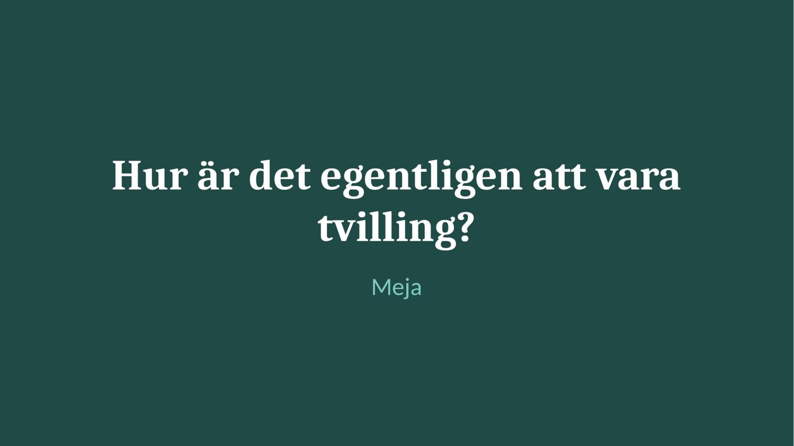
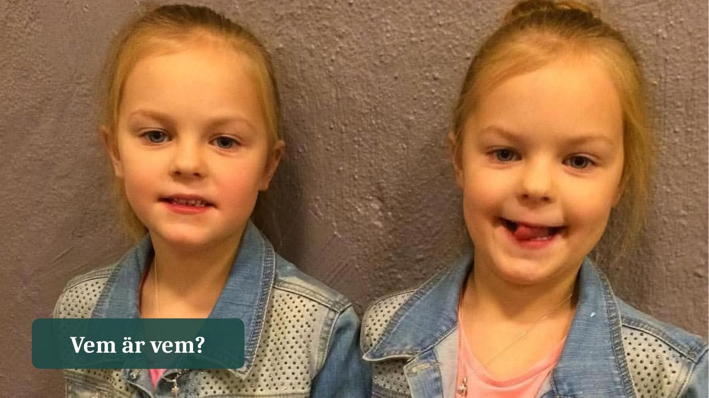
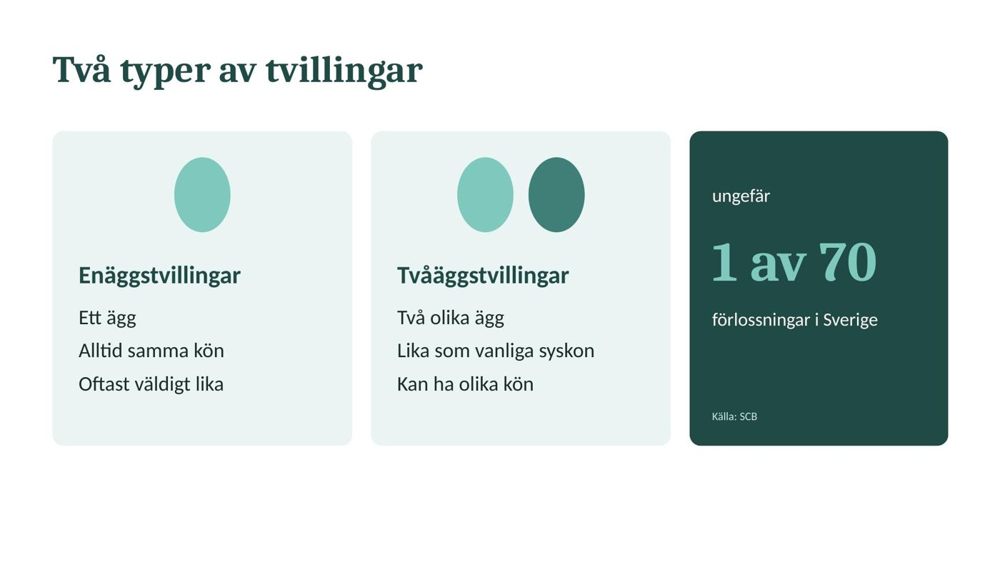
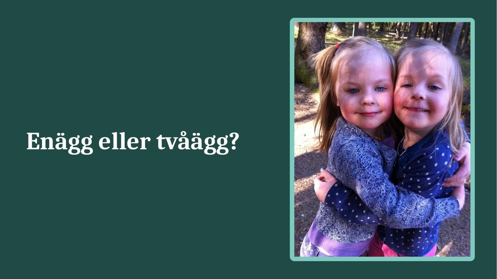
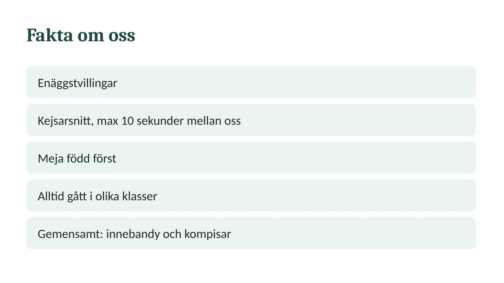
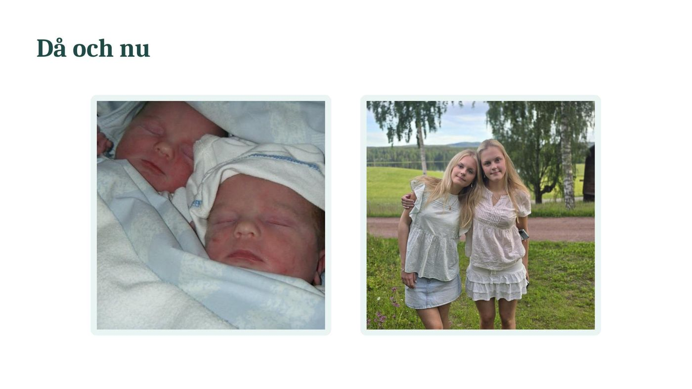
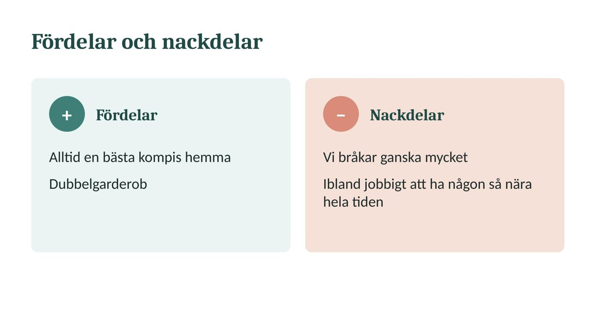
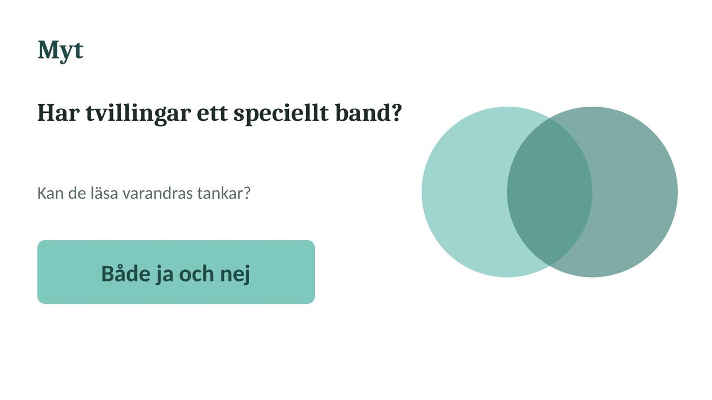
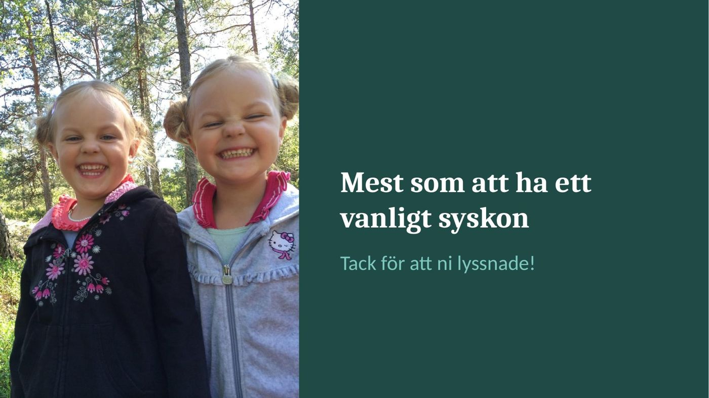

1
Titelslide
Text: Hur är det egentligen att vara tvilling? Under rubriken: Meja.
Bild: ingen, bara text.
Visas från start.
Mejas tal
Gulmarkerad text är ändrad eller ny.
Röd överstruken text är borttagen.
Ljusblå bakgrund betyder att stycket är flyttat.
Rubrikerna Slide 1–9 är nya och visar vilken slide texten hör till.
Hej och välkomna!
Idag ska jag prata om hur det egentligen är att vara tvilling och vad skillnaden är mellan att vara enäggstvilling och tvåäggstvilling.
Men innan jag börjar tänkte jag visa några bilder på oss. Kan ni gissa vem som är vem? (Visa bilderna och låt publiken gissa.)
Som ni kanske märker kan det ibland vara ganska svårt att se skillnad på oss, speciellt när vi var små. Men hur är det egentligen att växa upp som tvilling? Är det så speciellt som många tror, eller är det egentligen precis som att ha ett vanligt syskon?
Det tänkte jag berätta mer om idag.
Vi börjar med lite fakta. Det finns två huvudtyper av tvillingar: enäggstvillingar och tvåäggstvillingar.
Enäggstvillingar kan endast ha samma kön och är oftast mer lika varandra, medan tvåäggstvillingar genetiskt är ungefär lika lika som vanliga syskon och kan därför se ganska olika ut. De kan också ha olika kön, till skillnad från enäggstvillingar.
Sannolikheten att få tvillingar är ungefär 1 på 80 graviditeter 70 förlossningar i Sverige, även om det varierar beroende på bland annat ärftlighet och andra faktorer.
Nu tänkte jag gå över till mer fakta om oss. Baserat på bilderna, tror ni att vi är enäggs- eller tvåäggstvillingar? (Låt publiken gissa.)
Vi är enäggstvillingar och föddes genom kejsarsnitt. Det skiljer bara ungefär max tio sekunder mellan oss, eftersom två olika barnmorskor tog ut varsin av oss nästan samtidigt. Så vi har nästan alltid varit jämngamla! Jag är född först, alltså äldst.
En sak som kanske är lite ovanlig är att vi alltid har gått i olika klasser. Det har gjort att vi också har fått skapa våra egna kompisgäng och vara mer självständiga, istället för att alltid jämföras med varandra.
Vi har ändå ganska lika personligheter och många gemensamma intressen. Till exempel gillar vi båda innebandy och har många gemensamma kompisar.
När vi var riktigt små var vi väldigt lika varandra. Det var ofta svårt för andra att se vem som var vem. (Visa bilden från när vi var jättesmå.) Men ju äldre vi har blivit, desto mer olika har vi också blivit, både till utseendet och som personer.
Att vara tvilling har såklart både fördelar och nackdelar.
En stor fördel är att man alltid har någon att vara med. Man har alltid en bästa kompis hemma som man har känt hela livet. Det är också ganska praktiskt att kunna låna kläder av varandra. Man kan nästan säga att vi har en dubbelgarderob!
Men det finns även nackdelar. Eftersom vi spenderar så mycket tid tillsammans och är med varandra större delar av dygnet kan vi också bråka ganska mycket. Även om man är väldigt lik någon betyder det inte att man alltid tycker likadant. Ibland kan det faktiskt vara ganska jobbigt att ha någon så nära hela tiden.
En vanlig myt är att tvillingar har ett speciellt band till varandra, nästan som att de kan läsa varandras tankar eller känna vad den andra känner.
Men stämmer det verkligen?
Jag skulle säga både ja och nej. Eftersom vi har levt tillsammans hela livet känner vi varandra väldigt bra och tänker ofta ganska lika. Ibland kan vi förstå vad den andra menar utan att ens behöva förklara så mycket.
Men jag tror inte att vårt band är så annorlunda från det som andra syskon kan ha. Vi känner varandra bra eftersom vi har vuxit upp tillsammans, inte för att vi har några övernaturliga förmågor.
Därför stämmer den här myten inte helt.
Så, hur är det egentligen att vara tvilling?
Om jag ska sammanfatta det skulle jag säga att det inte är så märkvärdigt som många kanske tror. Visst finns det vissa speciella saker med att vara tvilling, som att ha varit nästan identiska när vi var små och att alltid ha någon i samma ålder att dela livet med.
Men i slutändan känns det faktiskt mest som att ha ett vanligt syskon.
Tack för att ni har lyssnat!
Förslag på nio slides i den ordning de visas. Under varje står vad sliden kan innehålla och vid vilken mening i manuset Meja byter till den.
Text: Hur är det egentligen att vara tvilling? Under rubriken: Meja.
Bild: ingen, bara text.
Visas från start.
Text: Vem är vem?
Bild: jeansjackorna, ett stort foto över hela sliden.
Byt vid: "Kan ni gissa vem som är vem?"
Text: Enäggstvillingar: ett ägg, alltid samma kön, oftast väldigt lika. Tvåäggstvillingar: två olika ägg, lika som vanliga syskon, kan ha olika kön. Ungefär 1 av 70 förlossningar i Sverige.
Liten text längst ner: Källa: SCB.
Bild: ingen.
Byt vid: "Vi börjar med lite fakta."
Text: Enägg eller tvåägg?
Bild: kramen i de blå koftorna.
Byt vid: "Nu tänkte jag gå över till mer fakta om oss."
Text: Enäggstvillingar. Kejsarsnitt, max 10 sekunder mellan oss. Meja född först. Alltid gått i olika klasser. Gemensamt: innebandy och kompisar.
Bild: ingen.
Byt vid: "Vi är enäggstvillingar..."
Text: bara rubriken Då och nu.
Bild: nyföddbilden till vänster och sommarbilden till höger.
Byt vid: "När vi var riktigt små..."
Text i två spalter. Fördelar: alltid en bästa kompis hemma, dubbelgarderob. Nackdelar: vi bråkar ganska mycket, ibland jobbigt att ha någon så nära hela tiden.
Bild: ingen.
Byt vid: "Att vara tvilling har såklart både fördelar och nackdelar."
Text: Har tvillingar ett speciellt band? Kan de läsa varandras tankar? Både ja och nej.
Bild: ingen.
Byt vid: "En vanlig myt är..."
Text: Mest som att ha ett vanligt syskon. Under det: Tack för att ni lyssnade!
Bild: skrattet i skogen, svart och grå tröja.
Byt vid: "Så, hur är det egentligen att vara tvilling?"
Håll texten på sliderna kort, så att publiken lyssnar på Meja i stället för att läsa.
Ett exempel på hur sliderna kan se ut. Meja gör sin egen presentation i PowerPoint, så det här är bara ett förslag att utgå från.








